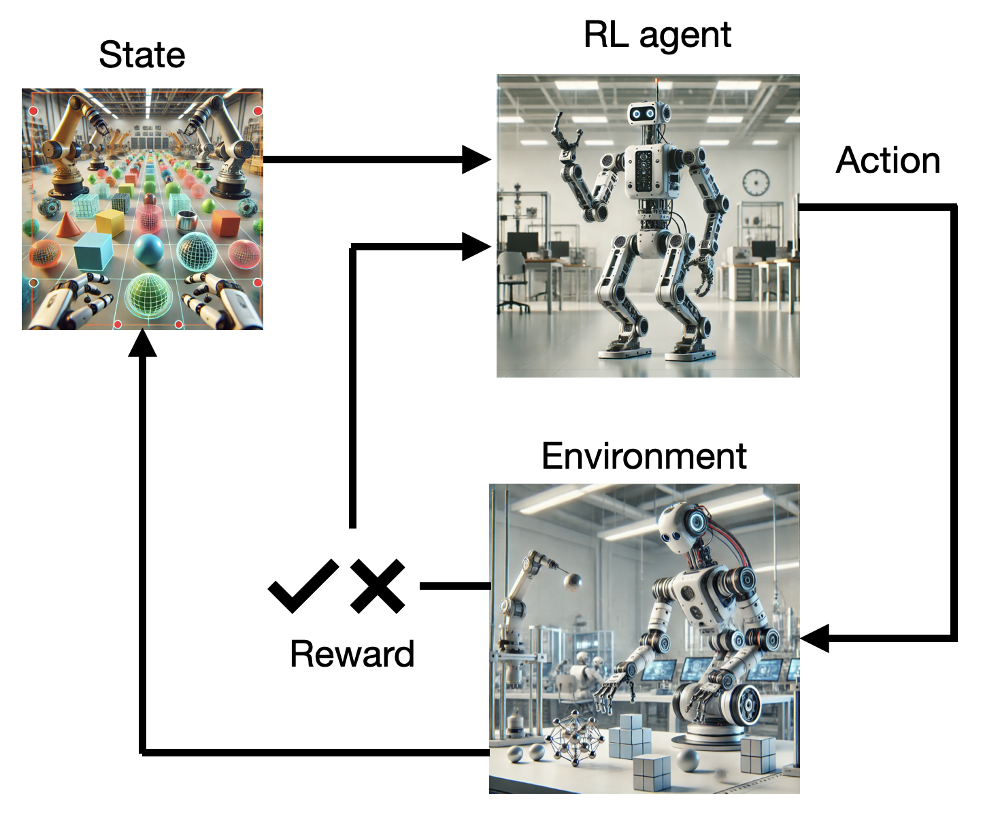

Introduction
Deep reinforcement learning (Deep RL) is the integration of deep learning methods, classically used in supervised or unsupervised learning contexts, to reinforcement learning (RL), a well-studied adaptive control framework used in problems with delayed and partial feedback.
What is Reinforcement Learning?

Supervised learning (SL) trains a discriminative model (classification or regression) by comparing the correct answer (ground truth) available in a training set to compute a prediction error. For neural networks, the prediction error (typically the difference between the ground truth and the predicted output) is used by the backpropagation algorithm to adapt the parameters of the model so that the prediction error is iteratively reduced. Typical examples are convolutional neural networks (CNN) predicting the label associated to an image, a recurrent neural network (RNN) predicting autoregressively the future of a time series, or a fully-connected network performing credit scoring. The major drawback of SL methods is that they typically require a lot of annotated data, which are very expensive to produce.
Unsupervised learning (UL) only deals with raw data, trying to extract statistical properties without any additional information. One application of UL is dimensionality reduction, which searches how to project highly dimensional data (e.g. images) onto smaller spaces without losing too much information. Algorithms like PCA (Principal Components Analysis) or neural architectures like autoencoders are typically used. Another approach to UL is generative modelling, i.e. learning a model of the distribution of the data allowing to generate new samples. Generative AI (ChatGPT, Midjourney, etc) relies on learning the distribution of vast amounts of text or images in order to generate novel high-quality samples. Self-supervised learning relies on using supervised learning algorithms on raw data by using self-generated pretext tasks, such as masking part of the data in the input and learning to predict it, or guessing the next item in a sequence.
Reinforcement learning (RL) lies somehow in between: the model makes a prediction (an action), but there is no ground truth to compare with. The only feedback it gets from the environment is a unidimensional reward signal that informs how good (or bad) the action was. In the extreme case, this partial feedback can be binary, like winning or losing a game after a sequence of dozens of actions.
RL setups follow the agent-environment interface [@Sutton1998]. The agent (for example a robot) is in a given state \(s_t\) at time \(t\). This state represents the perception of the robot (camera, internal sensors) but also its position inside the environment, and generally anything relevant information for the task. The agent selects an action \(a_t\) according to its policy (or strategy). This action modifies the environment (or world), what brings the agent in a new state \(s_{t+1}\). Furthermore, a reward \(r_{t+1}\) is delivered to the agent to valuate the executed action. This interaction loop continues over time, leading to episodes or trajectories of various lengths until a terminal state is reached. The goal of the agent is to find a policy that maximizes the sum of the rewards received over time (more on that later).

The key concept in RL is trial and error learning: trying out actions until their outcome is good. The agent selects an action from its repertoire and observes the outcome. If the outcome is positive (reward), the action is reinforced (it becomes more likely to occur again). If the outcome is negative (punishment), the action will be avoided in the future. After enough interactions, the agent has learned which action to perform in a given situation.

The agent has to explore its environment via trial-and-error in order to gain knowledge. The agent’s behavior then is roughly divided into two phases:
- The exploration phase, where it gathers knowledge about its environment.
- The exploitation phase, where this knowledge is used to collect as many rewards as possible.
The biggest issue with this approach is that exploring large action spaces might necessitate a lot of trials (a problem referred to as sample complexity). The modern techniques we will see in this book try to reduce the sample complexity.

Applications of Reinforcement Learning
RL can be used in many control problems, ranging from simple problems to complex robotics, video games or even plasma control.
Optimal control
The most basic problems on which RL can be applied are simple control environments with a few degrees of freedom. The gymnasium library (formerly gym) maintained by the Farama foundation provides an API for RL environments as well as the reference implementation of the most popular ones, including control problems, Mujoco robotic simulations and Atari games:
Some examples:
Goal: maintaining the pendulum vertical by changing the applied torque.
Before

After

Goal: maintaining the pole vertical by moving the cart.
Before

After

Source: https://towardsdatascience.com/cartpole-introduction-to-reinforcement-learning-ed0eb5b58288
See the Cartpole learning in real life (Deisenroth and Rasmussen, 2011):
Atari games
These toy control problems were used for decades to test various RL algorithms, although serious applications existed. The big breakthrough in (deep) reinforcement learning occurred in 2013, as a small startup in London, DeepMind Technologies Limited (now Google Deepmind), led by Demis Hassabis, successfully coupled reinforcement learning with deep neural networks for the first time. Their proposed algorithm, the deep Q-network [DQN, @Mnih2013;@Mnih2015], used a convolutional neural network (CNN) to learn to play many Atari games by trial and error, without any prior information about the game and only using raw images as inputs.
Similar pixel-based games were quickly mastered, such as the TORCS simulator with the A3C algporithm [@Mnih2016]:
Simulated robotics were addressed by similar techniques:
AlphaGo
The next major breakthrough for Deep RL happened in 2016, as AlphaGo, also created by Deepmind, was able to beat Lee Sedol, world champion of the game of Go. AlphaGo coupled the power of deep neural networks and RL with Monte Carlo Tree Search (MCTS), a popular tree-based search algorithm, to learn through self-play the optimal strategy for the game of Go. This performance was extremely commented, as such a dominance of an AI system was not expected before decades.
OpenAI Five and AlphaStar
Despite its complexity, the game of Go is actually quite simple for a computer: there is full observability (the entire state of the game is known to the players), the number of possible actions is quite limited, the consequence of an action is fully predictable, and planning is only necessary over a few dozens of plays. On the contrary, modern video games like DotA 2 or Starcraft have partial observability (the player only sees its immediate surroundings), hundreds of hierarchical actions can be made at each time step, the dynamics of the game are largely unknown, and a game can last hours. In some sense, it is much more difficult to become good at DotA than it is at chess or Go.
Deepmind and OpenAI recognized this difference and started applying deep RL methods to Starcraft II and DotA 2, respectively, between 2017 and 2020. They managed to beat teams of professional players under limited conditions, but eventually stopped because of the huge training costs (and they had to work on LLMs…).
Process control
In 2016, Deepmind applied its RL algorithms to the control of the cooling systems in Google’s datacenters. The system learned passively from observations of the current cooling sytem what the optimal policy was. When they gave control to the RL agent, it instantly led to a 40% reduction of energy consumption, which, for Google’s data centers, represents a huge amount of money. See @Luo2022 for a recent review of RL controlling cooling systems.

This showed that the progress in deep RL was not limited to toy problems or video games, but could be relevant for complex process control problems. An amazing illustration of that idea is the magnetic control of tokamak plasmas by @Degrave2022.

Another recent illustration is how RL can be used in the design of silicon chips by Nvidia [@Roy2022].

Robotics
A natural application of RL is in the domain of (autonomous) robotics, where agents / robots can autonomously solve tasks by themselves. A very influential lab working on robotics and Deep RL is RAIL lab of Sergey Levine at Berkeley.
OpenAI worked on dexterity tasks.
Autonomous driving is another promising field of application for deep RL. The english startup Wayve made for example a very exciting demo of their system (see @Kendall2018 and https://wayve.ai/blog/learning-to-drive-in-a-day-with-reinforcement-learning).
A recent contribution by the UZH Robotics and Perception Group leveraged deep RL to control drones flying at high speeds [@Kaufmann2023].
ChatGPT
RL can also be used to fine-tune generative AI models, such as diffusion models or large language models such as ChatGPT. Generative models typically learn from raw data using pretext tasks: predicting missing parts of the data, or predicting the next item in a sequence. While this allows to learn a world model, it does not lead to meaningful behaviors for a task at hand. Using RL allows to fine-tune the model so that its outputs align with the task. Such a model alignment is central to the acceptance of LLMs.

and many more…
RL finds applications in virtually any field involving sequential decision making, including finance technology [@Malibari2023], inventory management [@Madeka2022], missile guidance [@Li2022a] or healthcare [@Yu2020b].